How I Modernized SOLV Energy's Web Presence and Built Power Apps That Streamlined Internal Workflows
Internal Tools & External Web for SOLV Energy
SOLV Energy is a lifecycle partner for utility-scale solar, storage and energy infrastructure across the United States, with more than 20 GW of solar and storage under management and a listing on Nasdaq (MWH). A company building and announcing at that scale needs a digital presence that keeps up. This case study covers how I supported and built that presence across web, internal tools, graphic design and video.
- From internal approval to live on solvenergy.com
- Hours
- Channels I worked across: web, internal tools, graphic design and video
- 4
A Public Company's News, Kept Current
SOLV Energy talks to investors, customers, prospective hires, craft workers, community partners and thousands of employees in offices and on jobsites across the country. As projects, leadership news and earnings landed, the website had to keep up, and the visuals had to match a project pipeline running in dozens of states at once.
I handled the day-to-day work behind it: solvenergy.com in WordPress, an Employee Advocacy app I built in Power Apps, graphic design and video.
From Approval to Live in Hours
A public company's website has to move at the pace of its news. Updates to solvenergy.com often went live within hours of internal approval.
Here are the three steps and which of them were mine.
Internal Approval
The News Is Approved
Project announcements, leadership additions, earnings news and partnership wins came to me once they were approved internally.
My Part
Build It and Check It
I set up each article in WordPress: the title, a one-sentence extract, the background image, and its subject and media categories. Then I checked formatting, imagery and SEO in the live preview before anything published.
- Formatting
- Imagery
- Categories
- SEO
My Part
Live Within Hours
The story went live, often within hours of approval, so the homepage and the news page reflected where the company actually was.


Employee Sharing, From Email to Self-Serve
Sharing approved content used to mean digging through emails. I built and launched an Employee Advocacy platform in Power Apps that gives SOLV Energy teammates one place to find pre-approved posts, preview them and share them to LinkedIn in seconds.
Below it are the interior pages I kept accurate as the company grew.
Designing at the Speed of a Public Company's News Cycle
When SOLV Energy goes public, breaks ground or sends an executive to a conference, the visuals for that moment have to be ready fast, sometimes the same day. I produced ongoing graphic design across speaker session cards, kudos and recognition posts, project announcements and case study teasers, working within SOLV Energy's visual system and extending it over time.
I kept compositions clean, built palettes on SOLV Energy's signature colors and set headlines so each graphic still read at thumbnail size in a social feed. Assets shipped quickly and still held up for investors and customers.
Bringing Field Stories and Project Milestones to Life Through Video
Video is how SOLV Energy shows its work to people who will never visit a jobsite. I helped concept, script and produce social videos and internal content for project milestones, customer testimonials and culture moments, and let the people doing the work speak for themselves.
Editing stayed minimal: on-site footage, a light brand overlay and pacing tuned for LinkedIn and for longer internal pieces.
Hiring for a content, web, or marketing operations role? I would like to talk.
csworkportfolio@gmail.comLinkedIn